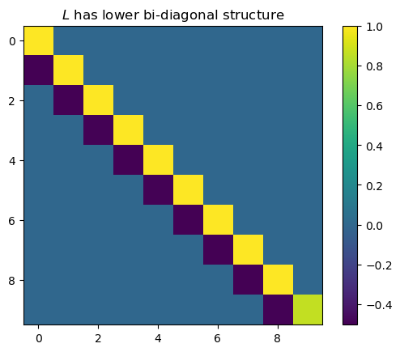
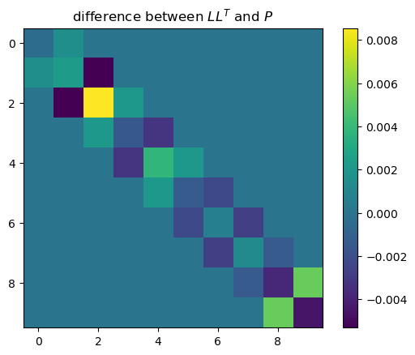

a = 1/2
s2 = 1.
n = 10
# stationary
tau2 = s2 / (1 - a**2)
cov = jnp.array([[
tau2 * a**(jnp.abs(i - j))
for j in range(n)
] for i in range(n)])Cross-Entropy method
[!CAUTION] this module is still under construction
The cross entropy method (Rubinstein1997Optimization?; Rubinstein2004CrossEntropy?) is a method for determining good importance sampling proposals. Given a parametric family of proposals \(g_\theta(x)\) and target \(p(x)\), the Cross-Entropy method aims at choosing \(\theta\) such that the Cross Entropy \[ \mathcal H_{\text{CE}} \left( p \middle|\middle| g_{\theta} \right) = \int p(x) \log g_{\theta}(x) \mathrm d x \] is maximized. This is equivalent to minimizing the Kullback Leibler divergence between \(p\) and \(g_\theta\). As \(H_\text{CE}\) is not analytically available, it is approximated by importance sampling itself, usually with a suitable proposal \(g_{\hat\theta_0}\). Then the approximate optimization problem is solved, yielding \(\hat \theta_1\). These steps are then iterated until convergence, using common random numbers to ensure convergence.
Considering the Cross-Entropy method with a Gaussian proposal \(g_\theta\), we see that the optimal \(\theta\) only depends on the first and second order moments of \(p\), indeed the optimal Gaussian is the one that matches these moments. Unfortunately this approach is not feasible for the models we consider in this package as the dimensionality (\(n \cdot m\)) is likely too high to act on the joint distribution directly - matching means is feasible, but simulating from the distribution and evaluating the likelihood is infeasible. However, we can exploit the Markov structure of our models:
For the class of state space models treated in this package, it can be shown that the smoothing distribution, the target of our inference, \(p(x|y)\), is again a Markov process, see Chapter 5 in (Chopin2020Introduction?), so it makes sense to approximate this distribution with a Gaussian Markov process. For such a Gaussian Markov process it is known that the precision matrix \(P\) of the joint distribution is sparse, indeed it is a block-tri-diagonal matrix.
computation of Cholesky factor \(L\) of \(P\)
(Schafer2021Sparse?) show that the centered Gaussian Markov process (more generally any Gaussian distribution with given sparsity) which minimizes the Kullback-Leibler divergence to a centered Gaussian with specified covariance matrix has an analytically and numerically tractable Cholesky decomposition that can be computed fast. Using this Cholesky decomposition we are able to evaluate the likelihood and simulate from this distribution.
Consider states \(X_t\) consisting of \(m\) states \(X_{t,1}, \dots, X_{t, m}\). The \(i\)-th \(v_{i}\) column of the KL-optimal Cholesky decomposition corresponding to \(X_t\) can, by (Schafer2021Sparse?), be obtained by \[ v_{i} = \frac{1}{\lambda_{i}}\text{Cov} \left(X_{t,i}, \dots, X_{t,m}, X_{t+1, 1}, \dots, X_{t+1, m} \right)^{-1} e_{1} \] where \(\lambda_i\) is the square root of the first entry of the matrix vector product on the right-hand side and \(e_{1}\) is the first unit vector. If \(t=n\), then it suffices to replace above covariance with \(\text{Cov}\left(X_{t,i}, \dots, X_{t,m}\right)\). In our setup we replace the exact covariance by an importance sampling estimate with weights \(w^i\), \(i = 1, \dots, n\).
cholesky_components
cholesky_components (samples:jaxtyping.Float[Array,'Nnm'], weights:jaxtyping.Float[Array,'N'])
calculate all components of the Cholesky factor of \(P\)
| Type | Details | |
|---|---|---|
| samples | Float[Array, ‘N n m’] | samples of \(X_1, \ldots, X_n\) |
| weights | Float[Array, ‘N’] | \(w\), need not be normalized |
| Returns | MarkovProcessCholeskyComponents | block diagonal and off-diagonal components |
ce_cholesky_last
ce_cholesky_last (x:jaxtyping.Float[Array,'Nm'], weights:jaxtyping.Float[Array,'N'])
Calculate the Cholesky factor of \(P\) corresponding to \(X_n\).
| Type | Details | |
|---|---|---|
| x | Float[Array, ‘N m’] | samples of \(X_n\) |
| weights | Float[Array, ‘N’] | \(w\), need not be normalized |
| Returns | Float[Array, ‘m m’] | Cholesky factor |
ce_cholesky_block
ce_cholesky_block (x:jaxtyping.Float[Array,'Nm'], x_next:jaxtyping.Float[Array,'Nm'], weights:jaxtyping.Float[Array,'N'])
Calculate the columns and section of rows of the Cholesky factor of \(P\) corresponding to \(X_t\), \(t < n\).
| Type | Details | |
|---|---|---|
| x | Float[Array, ‘N m’] | samples of \(X_t\) |
| x_next | Float[Array, ‘N m’] | samples of \(X_{t+1}\) |
| weights | Float[Array, ‘N’] | \(w\), need not be normalized |
| Returns | Float[Array, ’2*m m’] | Cholesky factor |
final_precision_root
final_precision_root (cov)
transition_precision_root
transition_precision_root (cov)
running example: AR(1) process
we’ll use the simples non-degenerate Gaussian Markov process as an example, an AR(1) process. We start this process in its stationary distribution.
N = 100000
initial_samples = MVN(jnp.zeros(n), cov).sample((N,), seed=jrn.PRNGKey(5324523423))[...,None]
initial_weights = jnp.ones(N)
initial_samples.shape
root_diag, root_off_diag = cholesky_components(initial_samples, initial_weights)
P = jnp.linalg.inv(cov)
L = jnp.diag(jnp.concatenate(root_diag)[:,0]) + jnp.diag(jnp.concatenate(root_off_diag)[:,0], -1)
plt.title("$L$ has lower bi-diagonal structure")
plt.imshow(L)
plt.colorbar()
plt.show()
plt.title("difference between $L L^T$ and $P$")
plt.imshow(L @ L.T - P)
plt.colorbar()
plt.show()
simulation using \(L\)
As \(LL^T = P = \Sigma^{-1}\), \(L^{-T}L^{-1} = \Sigma\) so to simulate \(X \sim \mathcal N(0, \Sigma)\) it suffices to simulate a standard normal \(Z \sim \mathcal N(0, I)\) and solve \(L^T X = Z\). Luckily, \(L^T\) is an upper block diagonal matrix which solving this system of equations straightforward. To this end we partition \(X = (X_1^{T}, \dots, X_n^{T})^{T}\) and \(Z = (Z_1^{T}, \dots, Z_n^{T})^{T}\) and \(L = \text{block-diag} \left( L_{1,1}, \dots, L_{n,n} \right) + \text{lower-block-off-diag} \left( L_{2,1}, \dots, L_{n, n-1} \right)\). Starting with \(X_n\), we solve \[ L_{n,n}^T X_{n} = Z_{n} \] by using the fact that \(L_{n,n}^T\) is an upper triangular matrix. We then iteratively solve for \(i = n-1, \dots, 1\) \[ L_{i,i}^TX_{i} + L_{i+1,i}^T X_{i + 1} = Z_{i}, \] so \[ X_{i} = L_{i,i}^{-T} \left( Z_{i} - L_{i +1, i}^{T} X_{i + 1} \right). \]
simulate
simulate (full_diag:jaxtyping.Float[Array,'nmm'], off_diag:jaxtyping.Float[Array,'n-1mm'], key:Union[jaxtyping.Key[Array,''],jaxtyping.UInt32[Array,'2']], N:int)
Simulate from Markov process with Cholesky factor \(L\).
| Type | Details | |
|---|---|---|
| full_diag | Float[Array, ‘n m m’] | block diagonals of \(L\) |
| off_diag | Float[Array, ‘n-1 m m’] | off-diagonals of \(L\) |
| key | Union | random key |
| N | int | number of samples |
| Returns | Float[Array, ‘N n m’] | \(N\) samples of \(X_1, \ldots, X_n\) |
simulate_backwards
simulate_backwards (z_t, x_next, diag_tt, off_diag_t_tp1)
marginal distributions
Rewriting the above equations used for simulation, we see that
\[ X_{i} = A_{i + 1} X_{i + 1} + \varepsilon_{i} \]
with \(X_n \sim \mathcal N\left(0, L_{n,n}^{-T}L_{n,n}^{-1}\right)\), \(A_{i + 1} = -L_{i,i}^{-T}L_{i +1, i}^{T}\) and \(\varepsilon_{i} \sim \mathcal N\left(0, L_{i,i}^{-T}L_{i,i}^{-1}\right).\)
From these recursions we can caluclate the marginal covariances of \(X_i\) for all \(i\) by iteration.
marginals
marginals (mu:jaxtyping.Float[Array,'m'], full_diag:jaxtyping.Float[Array,'nmm'], off_diag:jaxtyping.Float[Array,'n-1mm'])
| Type | Details | |
|---|---|---|
| mu | Float[Array, ‘m’] | mean |
| full_diag | Float[Array, ‘n m m’] | block diagonals of \(L\) |
| off_diag | Float[Array, ‘n-1 m m’] | off-diagonals of \(L\) |
L_true = jnp.linalg.cholesky(jnp.linalg.inv(cov)).T
_,marginal_var = marginals(jnp.zeros(n), root_diag, root_off_diag)
fct.test_close(marginal_var[0,0], jnp.diag(cov), .01)Evaluating the density
Similar to simulation, we can evaluate the log-density \[ \log p(x) = - \frac{n\cdot m}{2} \log(2 \pi) - \frac{1}{2} \log \det \Sigma - \frac 1 2 (x - \mu)^{T} \Sigma^{-1}(x-\mu) \] efficiently using \(L\).
For the \(\log\det \Sigma\)-term notice that \(\Sigma = L^{-T}L^{-1}\) results in \(2 \log\det L = 2 \sum_{i = 1}^n \log\det L_{i,i}\). These determinants are simply the product of the diagonal entries, as \(L\) is a lower triangular matrix.
The quadratic part can be rewritten as \(\lVert L^T(x-\mu) \rVert^{2}\) and, using the structure of \(L^{T}\), this consists of terms of the form \(L^T_{i,i} (x_i - \mu_i) + L^T_{i+1, i}(x_{i + 1} - \mu_{i + 1})\).
log_prob
log_prob (x:jaxtyping.Float[Array,'n+1m'], full_diag:jaxtyping.Float[Array,'n+1mm'], off_diag:jaxtyping.Float[Array,'nmm'], mean:jaxtyping.Float[Array,'n+1m'])
| Type | Details | |
|---|---|---|
| x | Float[Array, ‘n+1 m’] | the location at which to evaluate the likelihood |
| full_diag | Float[Array, ‘n+1 m m’] | block diagonals of \(L\) |
| off_diag | Float[Array, ‘n m m’] | off-diagonals of \(L\) |
| mean | Float[Array, ‘n+1 m’] | mean of the process |
| Returns | Float | log-likelihood |
Example: AR(1) process with NB observations
Importance Sampling
For importance sampling with this model the log weights read \[ \log w(x) = \log p(x|y) - \log g(x) = \log p(x,y) - \log g(x) - \log p(y), \] where we ignore the \(\log p(y)\) term to obtain autonormailsed importance sampling weights.
ce_log_weights
ce_log_weights (x:jaxtyping.Float[Array,'n+1m'], y:jaxtyping.Float[Array,'n+1p'], full_diag:jaxtyping.Float[Array,'n+1mm'], off_diag:jaxtyping.Float[Array,'nmm'], mean:jaxtyping.Float[Array,'n+1m'], x0:jaxtyping.Float[Array,'m'], A:jaxtyping.Float[Array,'nmm'], Sigma:jaxtyping.Float[Array,'n+1mm'], B:jaxtyping.Float[Array,'n+1pm'], dist:tensorflow_probabi lity.substrates.jax.distributions.distribution.Distributi on, xi:jaxtyping.Float[Array,'n+1m'])
| Type | Details | |
|---|---|---|
| x | Float[Array, ‘n+1 m’] | the sample |
| y | Float[Array, ‘n+1 p’] | the observations |
| full_diag | Float[Array, ‘n+1 m m’] | block diagonals of \(L\) |
| off_diag | Float[Array, ‘n m m’] | off-diagonals of \(L\) |
| mean | Float[Array, ‘n+1 m’] | mean of the process |
| x0 | Float[Array, ‘m’] | initial state |
| A | Float[Array, ‘n m m’] | transition matrix |
| Sigma | Float[Array, ‘n+1 m m’] | covariance matrix |
| B | Float[Array, ‘n+1 p m’] | observation matrix |
| dist | Distribution | distribution of the initial state |
| xi | Float[Array, ‘n+1 m’] | initial state |
| Returns | Float | log-weights |
SSM to Markov Model
To inititialize the Cross-Entropy method, we will use the Laplace approximation, see [30_mode_estimation.ipynb]. This approximates the true posterior by the posterior of a Gaussian state space model. To initiailze the Cross-entropy procedure, we determine the Cholesky root of this Gaussian posterior and use it as an initial value. To determine the diagonal and off-diagonal components of the Cholesky root, we calcultae the joint covariance matrix \(\text{Cov} \left( X_t, X_{t + 1} | Y_1, \dots, Y_n \right)\) using the Kalman smoother and the FFBS, which results in \[ \text{Cov} \left( X_t, X_{t + 1} | Y_1, \dots, Y_n \right) = \begin{pmatrix} \Xi_{t|n} & \Xi_{t|t} A_t^T \Xi_{t + 1|t}^{-1} \Xi_{t + 1|n} \\ \left(\Xi_{t|t} A_t^T \Xi_{t + 1|t}^{-1} \Xi_{t + 1|n} \right)^T & \Xi_{t + 1 | n} \end{pmatrix}. \]
Then the algorithm by (Schafer2021Sparse?) allows us efficiently determine the desired cholesky root.
from jax.lax import cond
# | export
from isssm.kalman import kalman, smoother
def joint_cov(Xi_smooth_t, Xi_smooth_tp1, Xi_filt_t, Xi_pred_tp1, A_t):
"""Joint covariance of conditional Markov process"""
off_diag = Xi_filt_t @ A_t.T @ jnp.linalg.solve(Xi_pred_tp1, Xi_smooth_tp1)
return jnp.block([[Xi_smooth_t, off_diag], [off_diag.T, Xi_smooth_tp1]])
def forward_model_markov_process(y, x0, A, B, Sigma, Omega, time_reverse=True):
"""mean + Cholesky root components of precision matrix of smoothing distribution"""
x_filter, Xi_filter, x_pred, Xi_pred = kalman(y, x0, Sigma, Omega, A, B)
x_smooth, Xi_smooth = smoother(x_filter, Xi_filter, x_pred, Xi_pred, A)
(m,) = x0.shape
# permute X_t and X_t+1
P = jnp.block([[jnp.zeros((m, m)), jnp.eye(m)], [jnp.eye(m), jnp.zeros((m, m))]])
covs = vmap(joint_cov)(
Xi_smooth[:-1], Xi_smooth[1:], Xi_filter[:-1], Xi_pred[1:], A
)
def forwards(x_smooth, covs, Xi_smooth):
return x_smooth[::-1], vmap(lambda cov: P @ cov @ P.T)(covs)[::-1], Xi_smooth[0]
def backwards(x_smooth, covs, Xi_smooth):
return x_smooth, covs, Xi_smooth[-1]
mu, covs, final_cov = cond(
time_reverse, backwards, forwards, x_smooth, covs, Xi_smooth
)
roots = vmap(transition_precision_root)(covs)
root_diag, root_off_diag = jnp.split(roots, 2, 1)
final_root = final_precision_root(final_cov)
full_diag = jnp.concatenate([root_diag, final_root[None, :]], axis=0)
return mu, (full_diag, root_off_diag)ce_cholesky_precision
ce_cholesky_precision (y:jaxtyping.Float[Array,'n+1p'], x0:jaxtyping.Float[Array,'m'], A:jaxtyping.Float[Array,'nmm'], Sigma:jaxtyping.Float[Array,'n+1mm'], B:jaxtyping.Float[Array,'n+1pm'], xi:jaxtyping.Float[Array,'n+1p'], dist, initial_mean:jaxtyping.Float[Array,'n+1m'], initial_diag:jaxtyping.Float[Array,'n+1mm'], initial_off_diag:jaxtyping.Float[Array,'nmm'], n_iter:int, N:int, key:Union[jaxtyping.Key[Array,' '],jaxtyping.UInt32[Array,'2']], eps:jaxtyping.Float=1e-05)
| Type | Default | Details | |
|---|---|---|---|
| y | Float[Array, ‘n+1 p’] | observations | |
| x0 | Float[Array, ‘m’] | initial state | |
| A | Float[Array, ‘n m m’] | state transition matrices | |
| Sigma | Float[Array, ‘n+1 m m’] | state noise covariance matrices | |
| B | Float[Array, ‘n+1 p m’] | observation matrices | |
| xi | Float[Array, ‘n+1 p’] | observation parameters | |
| dist | observation distribution | ||
| initial_mean | Float[Array, ‘n+1 m’] | initial mean | |
| initial_diag | Float[Array, ‘n+1 m m’] | initial off_diag | |
| initial_off_diag | Float[Array, ‘n m m’] | initial off_diag | |
| n_iter | int | number of iterations | |
| N | int | number of samples | |
| key | Union | random key | |
| eps | Float | 1e-05 | convergence threshold |
# model setup
m, p, np1 = 1, 1, 100
A = jnp.broadcast_to(jnp.eye(m), (np1, m, m))
B = jnp.broadcast_to(jnp.eye(m), (np1 + 1, p, m))
s2= 0.01
Sigma = jnp.broadcast_to(s2 * jnp.eye(m), (np1 + 1, m, m))
x0 = jnp.ones(m)
*_, dist, xi = nb_lcssm(x0, A, Sigma, B, 10.)
# simulate from model
key = jrn.PRNGKey(51)
key, subkey = jrn.split(key)
N = 1
(x_true, ), (y,) = simulate_lcssm(x0, A, Sigma, B, dist, xi, N, subkey)
# laplace approximation & importance sampling
s_init = x_true #jnp.log(y + 1.)
x_smooth, z, Omega = mode_estimation(y, x0, A, Sigma, B, dist, xi, s_init, 100)N = 100000
key, subkey = jrn.split(key)
initial_samples, initial_log_weights = lcssm_importance_sampling(y, x0, A, Sigma, B, dist, xi, z, Omega, N, subkey)
initial_weights = jnp.exp(initial_log_weights - jnp.max(initial_log_weights))
ess_pct(initial_log_weights)Array(94.44502857, dtype=float64)initial_mean, (initial_diag, initial_off_diag) = forward_model_markov_process(z, x0, A, B, Sigma, Omega)
key, subkey = jrn.split(key)
components, (samples, log_weights), iterations = ce_cholesky_precision(
y, x0, A, Sigma, B, xi, dist,
initial_mean, initial_diag, initial_off_diag,
10, N, subkey
)
ess_pct(log_weights)Array(98.67888455, dtype=float64)Multivarite test
n = 3
m = 2
N = int(1e5)
x0 = jnp.zeros(m)
A = jnp.tile(jnp.eye(m)[None,:,:], (n, 1, 1))
key, subkey = jrn.split(key)
Sigma = jnp.tile(jnp.eye(m)[None,:,:], (n + 1, 1, 1))
# NB observations
model = nb_lcssm(
x0,
A,
Sigma,
jnp.tile(jnp.eye(m)[None, :,:], (n + 1, 1, 1)),
.1
)
x0, A, Sigma, B, dist, xi = model
key, subkey = jrn.split(key)
(X,), (Y,) = simulate_lcssm(*model, 1, subkey)
s_init = vmap(jnp.dot)(B, X)
X_smooth, z_la, Omega_la = mode_estimation(Y, x0, A, Sigma, B, dist, xi, s_init, 10)
initial_mean, (initial_diag, initial_off_diag) = forward_model_markov_process(
z_la, x0, A, B, Sigma, Omega_la
)
#with jax.default_device(jax.devices("cpu")[0]):
_, (_, log_weights_ce), _ = ce_cholesky_precision(
Y,
x0,
A,
Sigma,
B,
xi,
dist,
initial_mean,
initial_diag,
initial_off_diag,
10,
N,
subkey,
)
ess_pct(log_weights_ce)Array(0.00490383, dtype=float64)Asymptotic covariance
See the derivations in the package authors PhD thesis. Given the Gaussian proposal \[ \log g_{\psi}(x) = \psi^{T}T(x) + \log Z(\psi), \] where \(\psi = \left( \Sigma^{-1}\mu, -\frac 12 \Sigma^{-1} \right)\), \(T(x) = \left( x, xx^T \right)^T\), \(\log Z(\psi) = -\frac{1}{2}\mu^{T}\Sigma^{-1}\mu + \frac{1}{2}\log \lvert \Sigma\rvert\), a conistent estimator of the asymptotic variance of the CE estimate (for a single iteration) is given by
\[ - \frac{1}{\sum_{i = 1}^{N}w_{i}} I(\hat \psi_{\text{CE}})^{-1} \left( \sum_{i = 1}^N w_{i}^{2} \left( (\mu, \Sigma + \mu\mu^{T})^{T} + (X_{i}, X_{i}X_{i}^T)^{T} \right) \left( (\mu, \Sigma + \mu\mu^{T})^{T} + (X_{i}, X_{i}X_{i}^T)^{T} \right) ^{T}\right)I(\hat \psi_{\text{CE}})^{-1}. \]
Here \(I(\psi) = \begin{pmatrix}-\Sigma & - 2\mu^{T} \otimes \Sigma \\ -2 (\mu^{T} \otimes \Sigma)^{T} & \frac{1}{2} \Sigma^{-1}\otimes \Sigma^{-1}\end{pmatrix}\)